Mostrar ao dono, com o material da própria clínica, que o site já existe, o que ele traz para o negócio e o que falta para ir ao ar.
Celular 9:16 (1080x1920), cerca de 78 s, narrado. Depois, a mesma edição em 16:9 para reunião.
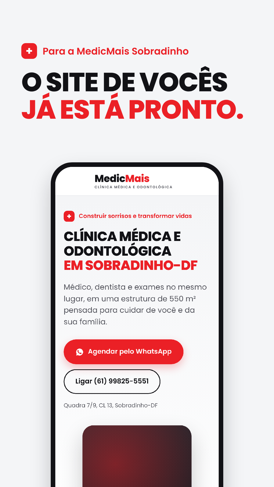
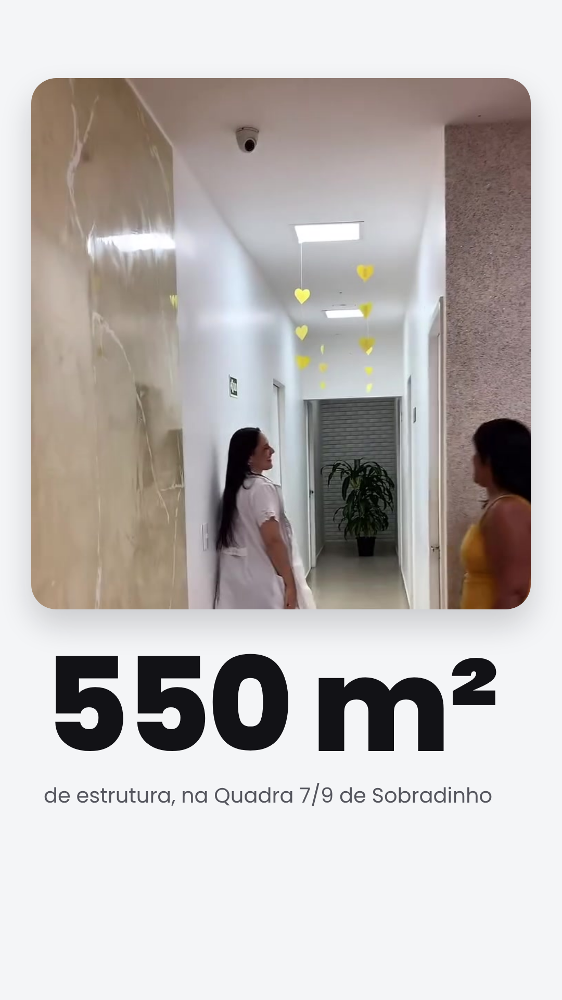
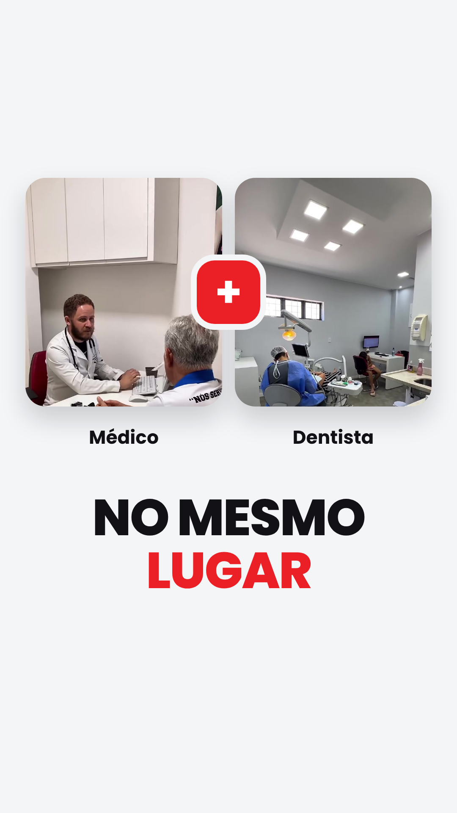
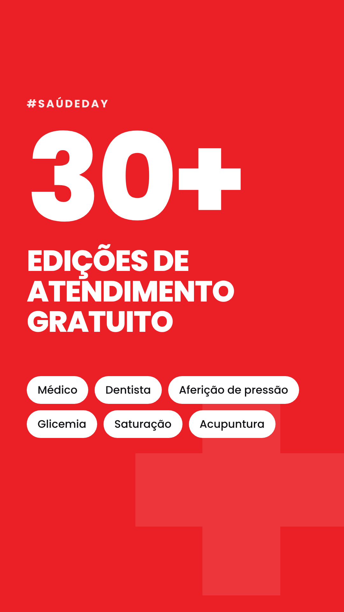
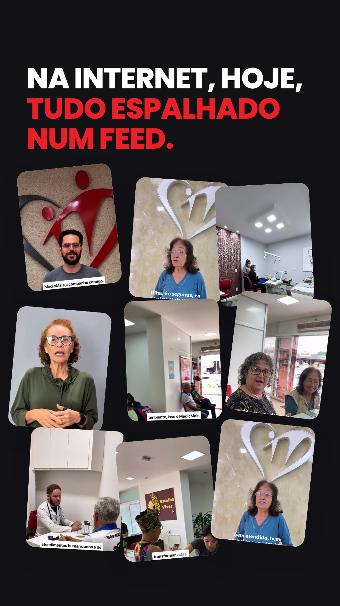
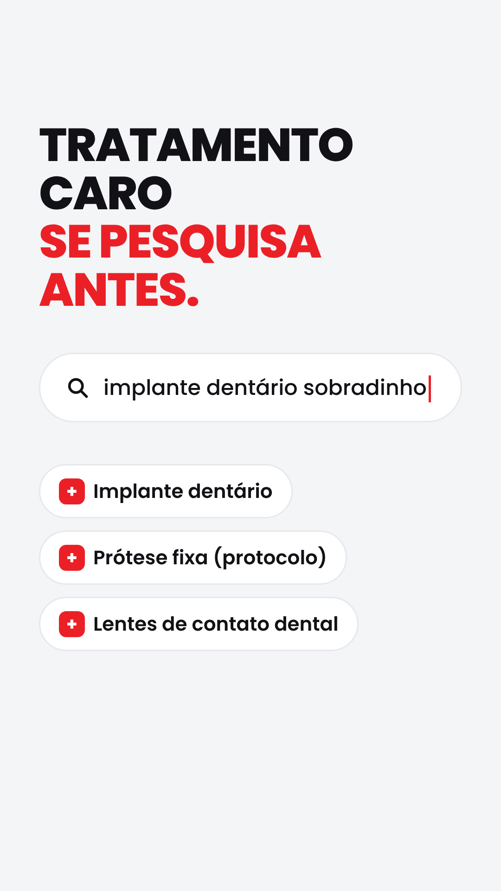
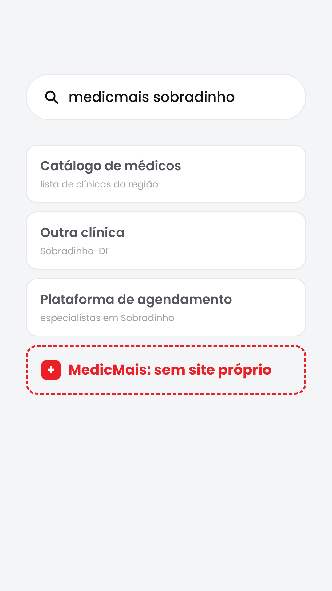
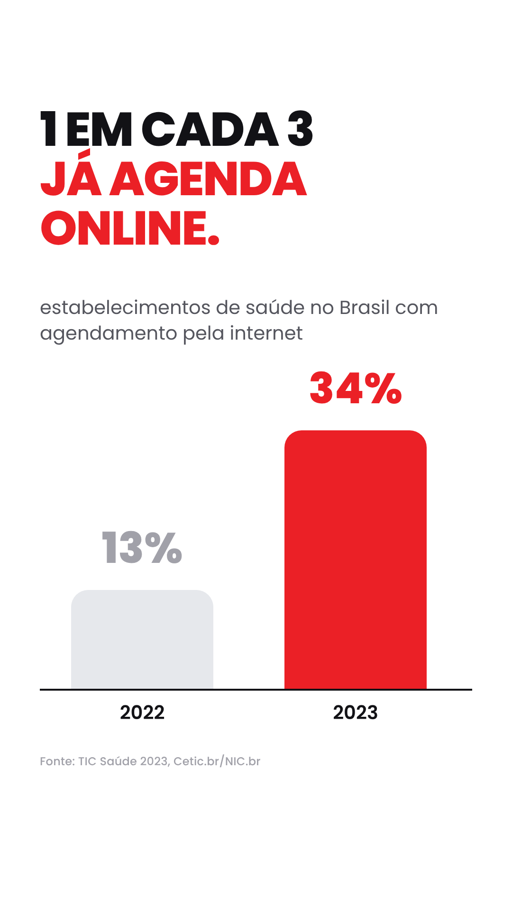
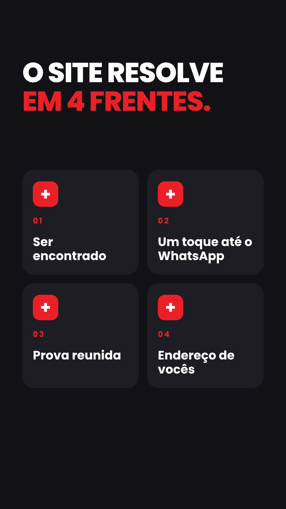
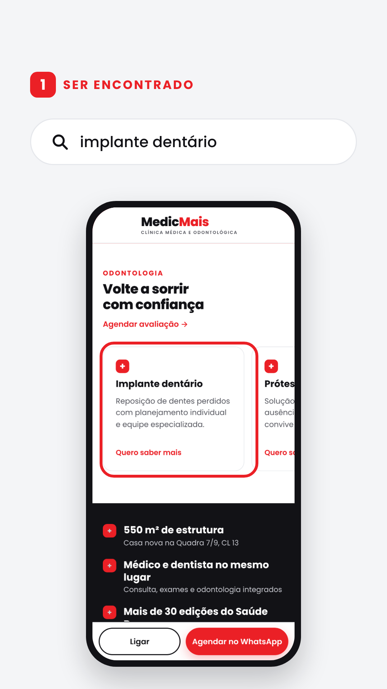
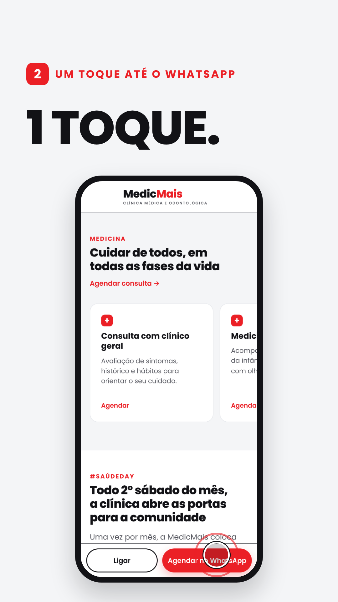
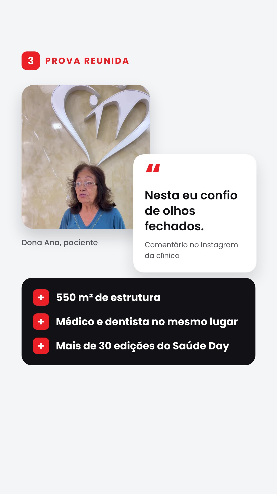
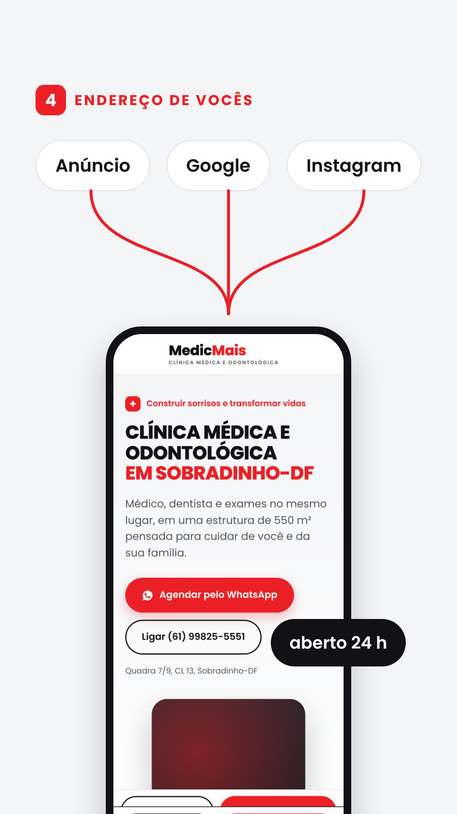
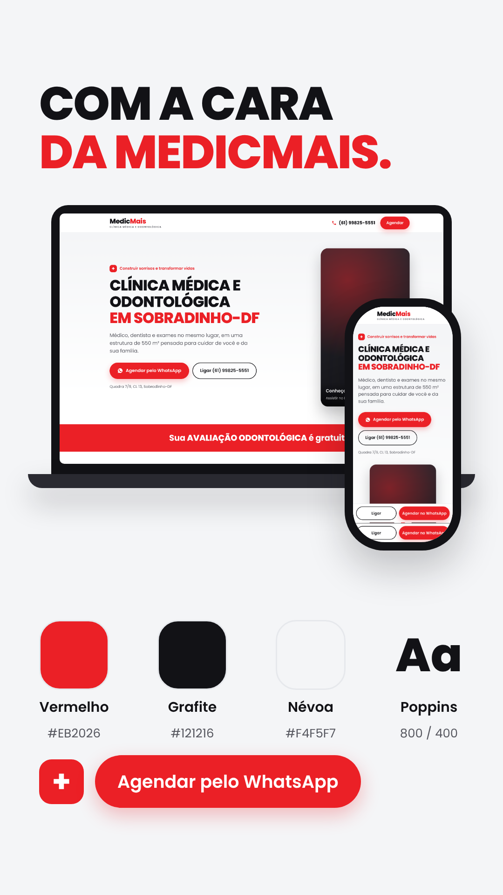
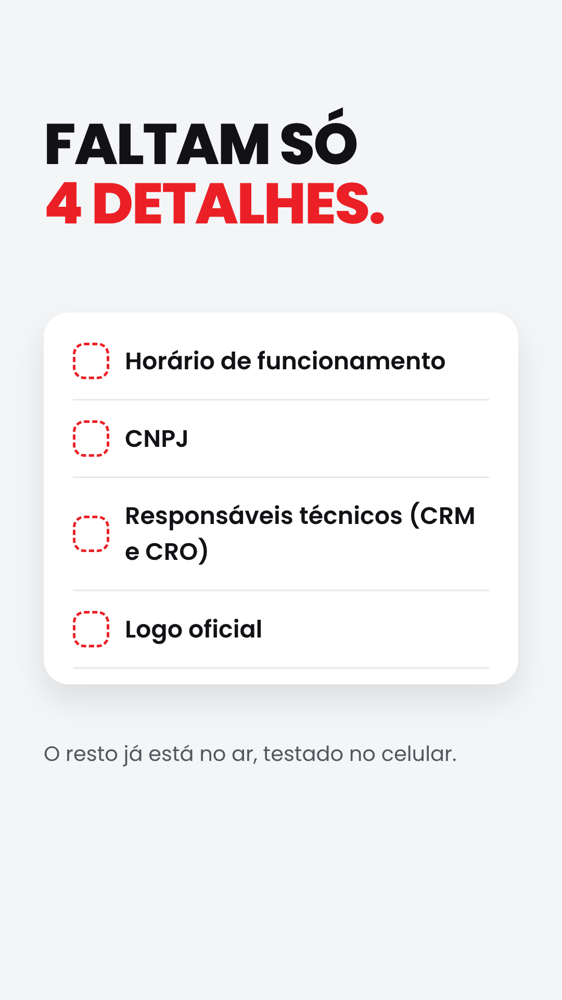
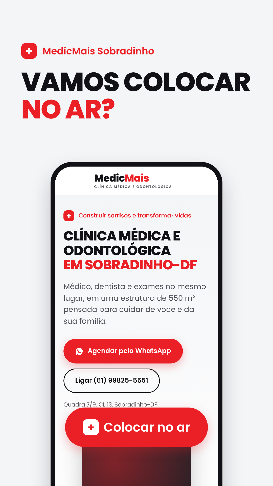